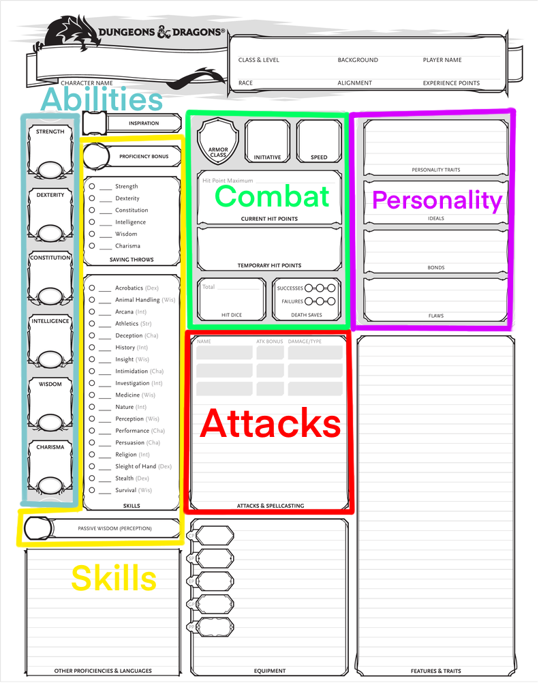

Character Sheet: Reference Page For Everything You Need
Your character sheet will be your guide for any information that you can't memorize. You will be referencing this page a LOT throughout your campaign, whether it be for skills you're proficient in, the languages your character knows, or just random notes you've jotted down. There are several ways to fill out your character sheet, but having a guide will make sure you have all the necessary blanks filled out. There are a lot of boxes in a character sheet, so feel free to use this as a reference to understand exactly what you're looking at. Download and print the character sheet here!
Character Sheet Check!
If you're filling out a character sheet while looking through this website, make sure to reference the beginning of each page and double check that you have everything filled out! A check mark will indicate that you are filling out that box completely, while a box will indicate that you are filling out that area partially.

- Abilities: Your general stats for your character. These numbers determine your overall skill in that respective area. For instance, having a high dexterity means you are light on your feet and have nimble hands, meaning actions that require precision (such as acrobatics or sleight of hand) are easier for you. Methods on how to determine your ability scores here.
- Skills: Throughout your campaign you will be tested with various "skill checks." These skill checks are modified by your ability modifier and proficiency bonuses. When your DM has you roll for a certain skill check, you will roll a d20, and add the respective modifiers and bonuses to the roll.
- Combat: Combat can sometimes be a long, drawn out process. What can help is to know your character and what he/she can do before your round even starts. The key items to keep track of are your Armor Class, Speed, Hit Points, and Hit Dice (these are explained in future pages).
- Initiative: Your initiative determines when you will act in combat. At the beginning of combat, characters will roll a d20 and add their initiative modifier (usually just their Dexterity modifier). A higher number means you act earlier in combat.
- Death Saves: When your character's HP falls below 0, your character falls unconscious. But don't lose hope! Your character still has a chance to stabilize. During your turn in combat, you will roll a d20 without any modifiers. 2-9 is a failure, while 10-19 is a success. If you roll a 1, you get two failures, but if you roll a 20, your characer is magically conscious with 1 HP. 3 successes means your character stablizes at 0 HP, but if you get 3 failures, your character dies. If you are attacked while in this state you automatically receive 1 failure. Your failures are cleared ONLY by a long rest.
- Attacks: This is a quick reference for your primary attacks and damaging abilities. More info here.
- Personality: Another quick reference. While not as important to write down, this is just in case you forget who your character is and what or who inspires him/her. I recommend filling this out when you are just starting.